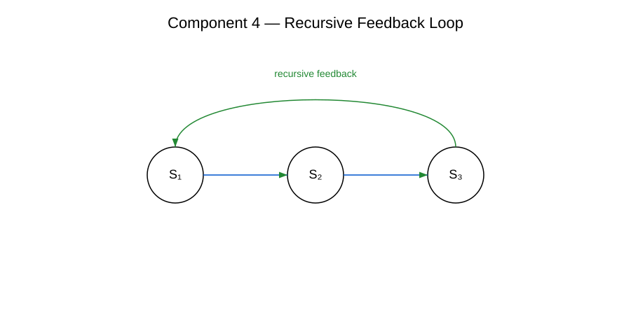

Komponente 4 — Konvergenzoperator
Der Konvergenzoperator ist die vierte zentrale Komponente des RRK‑Frameworks. Er beschreibt den Mechanismus, durch den emergente Muster (Komponente 3) stabilisiert und in konsistente Meta‑Strukturen überführt werden.
Definition
Ein Konvergenzoperator ist ein funktionaler Mechanismus, der rekursive und emergente Prozesse in stabile, wiederholbare und nicht‑regressive Strukturen überführt. Er bildet die Grundlage für die Ausbildung höherer Meta‑Strukturebenen.
Beispielhafte Darstellung

Rolle im RRK‑Framework
- Stabilisierung emergenter Muster
- Ausbildung konsistenter Meta‑Strukturen
- Übergänge zu höheren Ebenen der RRK‑Architektur
Er bildet die direkte Grundlage für Strukturtransformationen (Komponente 5) und die vollständige RRK‑7‑Architektur (Figure 6).